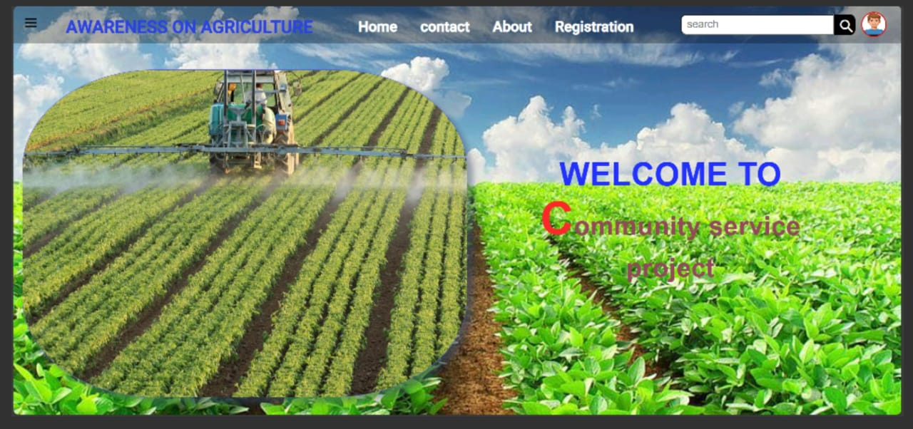

Personal decision-making, civic participation, and economic productivity require education across different fields. Including agriculturally related scientific and technological concepts in education leads to agricultural literacy. Awareness is the first step towards agricultural literacy, involving understanding basic concepts and their impact on society. A research study among 310 prospective teachers in mathematics, science, and social studies revealed moderate agricultural knowledge levels, highlighting the importance of enhanced agricultural education. Quantitative and qualitative data show that mathematics teachers had the highest awareness, followed by social studies and science teachers. Understanding agriculture is crucial for building a sustainable and informed future.